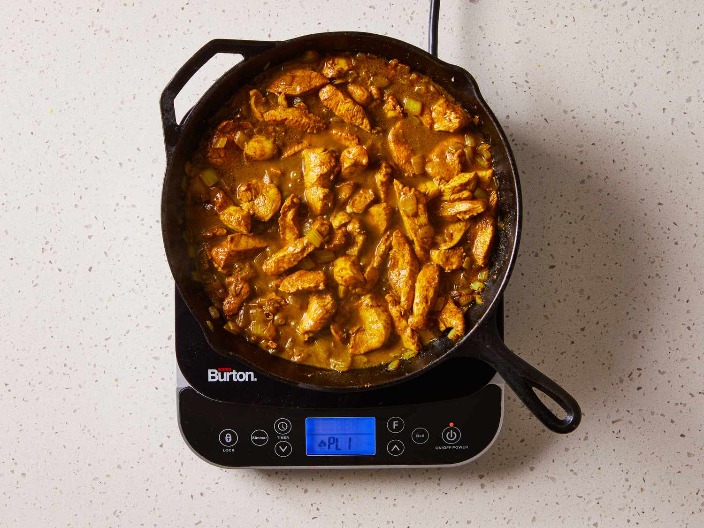

Chicken Curry's Recipe

Description:
Chicken Curry is a flavorful Filipino dish featuring chicken and vegetables simmered in a rich, creamy sauce made with coconut milk and aromatic curry spices.
Ingredients:
- 1/4 cup olive oil
- 2 large onions, diced
- 1/3 cup curry powder, or to taste
- 6 halves skinless, boneless chicken breast, cut into strips
Directions:
- Gather the ingredients.
- Heat oil in a large skillet over medium heat until hot. Add onion and sauté until soft and golden brown, 5 to 8 minutes.
- Slowly stir in curry powder until well blended.
- Add chicken; reduce the heat to low, cover, and cook until chicken is no longer pink in the center and the juices run clear, 20 to 40 minutes. An instant-read thermometer inserted into the center should read at least 165 degrees F (74 degrees C).
- Uncover and cook, stirring constantly to prevent burning, until pan juices reduce to desired amount, 3 to 5 minutes.
- Serve and Enjoy!
Back to Home